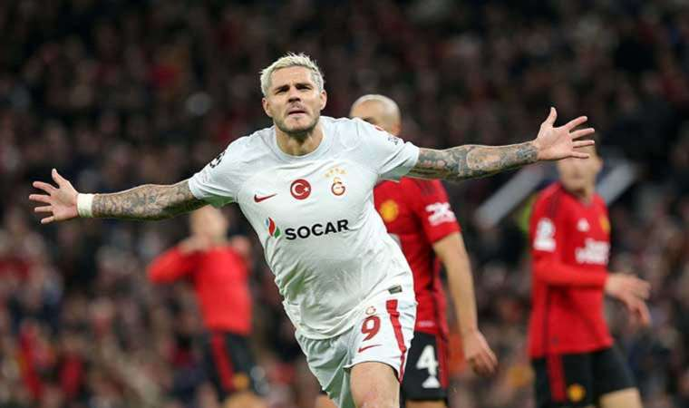
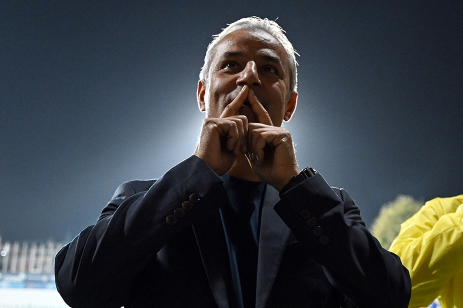
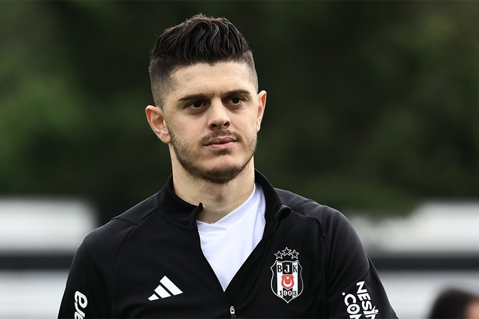
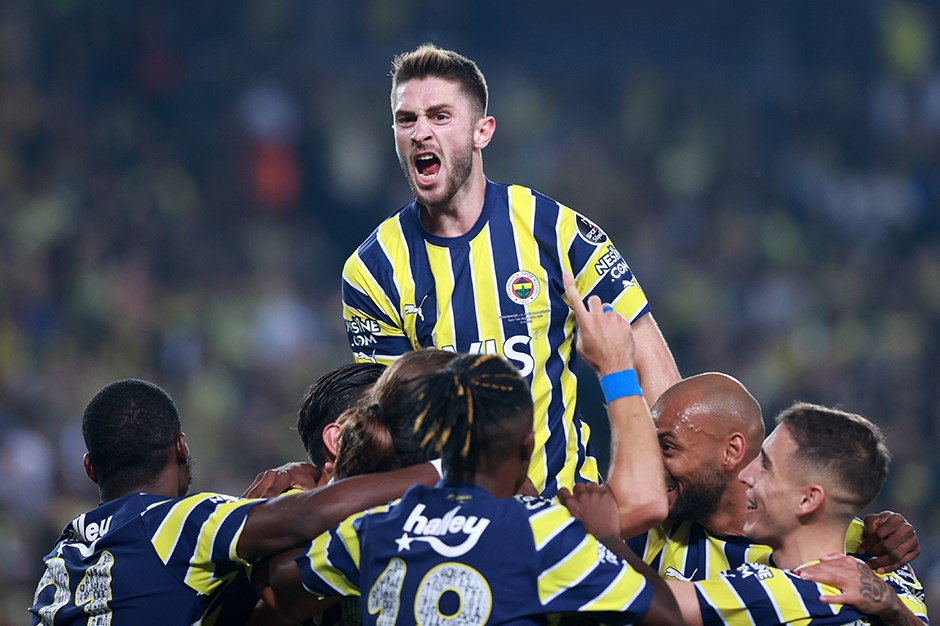

Edin Dzeko'dan Fenerbahçe Taraftarlarına Mesaj
Maçın ardından açıklamalarda bulunan Bosna Hersekli golcü futbolcu, "Önemli bir maçtı. İlk resmi maçımızda taraftarımızın önünde oynadık. Galip geldik. Harika bir netice elde ettik" dedi.
"BUGÜN BU TARAFTAR KARŞISINDA DUYGULANDIM"
Sarı-lacivertli taraftarlar için övgü dolu sözler söyleyen 37 yaşındaki futbolcu, "Taraftarın itici bir unsur olduğunu biliyorum. Çok fazla statta ve atmosferde oynadım. Bugün bu taraftar karşısında duygulandım. Taraftarları mutlu edebildiğimiz için keyifliyiz. Onlara teşekkür ediyorum. Ben bu kulüp ve taraftar için her şeyimi ortaya koyacağım. İlk maçta gol atmak mutluluktu. Böyle başlangıçlar her zaman güzeldir" diye konuştu.
"CENGİZ HARİKA BİR FUTBOLCU"
Fenerbahçe'ye transferi gündemde olan milli futbolcu Cengiz Ünder ile ilgili de değerlendirmede bulunan Dzeko, "Cengiz Ünder benim arkadaşım, küçük kardeşim. İyi bir oyuncu. Transfer konusunda yorum yapamam. Tek söyleyebileceğim harika bir oyuncu olduğu" diyerek sözlerini tamamladı.
Galatasaray’dan İngiltere’de muhteşem zafer

Galatasaray, Şampiyonlar Ligi'nde iki kez geriye düştüğü maçta Manchester United'ı deplasmanda 3-2 mağlup etti. Sarı-kırmızılılar Mauro Icardi ile bir penaltıdan da yararlanamadı
Galatasaray, UEFA Şampiyonlar Ligi A Grubu 2. haftasında deplasmanda İngiltere'nin Manchester United takımı ile karşılaştı.
Maçın 2. dakikasında, solda ceza sahasına giren Hojlund'un pasıyla penaltı noktası civarında buluşan Bruno Fernandes'in bekletmeden vuruşunda top yandan auta çıktı.
Avrupa kupaları tarihinde İngiliz temsilcileriyle 21 kez karşı karşıya gelen sarı-kırmızılı ekip, bu maçların 3'ünü kazandı, 8'i beraberlik aldı, 10'unu ise mağlup etti.
Galatasaray, Manchester United'ı 3-2 yenerek, İngiltere'de ilk galibiyetine imza atmış oldu.
Beşiktaş'ta sakatlık şoku!
Beşiktaş, İstanbulspor müsabakasında sakatlanan Eric Bailly'in sağlık durumu hakkında açıklama yayımladı. Fildişili stoperin spazm ve sağ uyluk arka adalesinde gerilme ve ödem tespit edildiği, tedavisinin devam ettiği belirtildi.
Siyah-beyazlılardan yapılan açıklamada şu ifadelere yer verildi:
"Futbol A Takımımızın Trendyol Süper Lig’de İstanbulspor ile oynadığı maçta ağrı hissederek müsabakaya devam edemeyen oyuncumuz Eric Bailly’in Acıbadem Altunizade Hastanesi’nde yapılan MR görüntülemesinde kürek kemiği çevresi kas grubunda spazm ve sağ uyluk arka adalesinde gerilme ve ödem tespit edilmiştir. Eric Bailly’in tedavisine sağlık ekiplerimizce devam edilmektedir."
Fenerbahçe istatistikleri altüst etti!

Yaz transfer döneminde yaptığı transferler ile dikkatleri üzerine çeken Trendyol Süper Lig ekibi Fenerbahçe, sezona fırtına gibi başladı.
Ligde 8 hafta geride kalırken sarı lacivertliler, bu 8 karşılaşmadan da galibiyet ile ayrılmayı başardı.
8 maçta topladığı 24 puan ile ligdeki en yakın takipçisi Galatasaray'ın 2 puan önünde lider konumda bulunan Fenerbahçe, istatistiklerde de dikkat çekici bir grafik sergiledi.
Opta'nın verilerine göre bu sezon Trendyol Süper Lig ve Avrupa'nın beş büyük liginde maç başına kalesine en az şut gelen (1.63) ve rakiplerini en düşük gol beklentisinde tutan (0.45 xGA) takım Fenerbahçe oldu.
Sarı lacivertliler, bu süreçte ligde sadece 3 gol yedi.
Ayrılığı önleyen İsmail Kartal'ın haklı gururu

Fenerbahçe Teknik Direktörü İsmail Kartal'ın sezon başında ayrılığı düşünülen futbolcunun arkasında durduğu ve vedayı önlediği iddia edildi. İsmail Kartal'ın takımda kalmasını sağladığı deneyimli isim, milli maçlardaki performansıyla dikkat çekti.
Fenerbahçe'de teknik direktör İsmail Kartal'ın, yönetimin yeni sezon öncesi vedalaşma planları yapmayı düşündüğü oyuncunun ayrılığına izin vermediği öne sürüldü.
İSMAİL KARTAL TAKIMDA KALMASINI İSTEDİ
Sabah'ın haberine göre İsmail Kartal'ın takımda kalmasını istediği tecrübeli futbolcu, hocasını gururlandırdı. Milli stoperin Hırvatistan ve Letonya maçlarında sergilediği performans dikkat çekti.
Burak Yılmaz'dan Milot Rashica kararı

Beşiktaş Teknik Sorumlusu Burak Yılmaz'ın Galatasaray derbisi öncesi Milot Rashica-Rachid Ghezzal ikilisi arasından tercihini yaptığı belirtildi.
Süper Lig'de cumartesi günü Galatasaray ile deplasmanda Derbi sınavına çıkacak olan Beşiktaş Teknik Sorumlusu Burak Yılmaz, dev maçın kadrosunu şekillendirmeye başladı.
SALİH UÇAN'IN YERİNE NECİP UYSAL
Sabah'ın haberine göre Burak Yılmaz, Salih Uçan'ın yokluğunda orta sahada Necip Uysal'ı kullanmayı düşünüyor.
RASHICA, GHEZZAL'A GÖRE BİR ADIM ÖNDE
Öte yandan Burak Yılmaz'ın tercihinin merak edildiği noktalardan biri de sağ kanat. Genç antrenörün Milot Rashica-Rachid Ghezzal ikilisi arasından tercihini yaptığı kaydedildi.
Okan Buruk'tan Hakim Ziyech açıklaması
Galatasaray teknik direktörü Okan Buruk, kulüp televizyonunda yaptığı açıklamada; "Hakim Ziyech'in ayağındaki ağrı tekrar olmuş gibi sanki lanse edildi ancak milli takımıyla iletişime geçtik. Orada oynamadan dönecek ve burada tedavisine devam edilecek." dedi.
Galatasaray teknik direktörü Okan Buruk, kulüp televizyonunda açıklamalarda bulundu. Okan Buruk, gündeme dair birçok konuya değindi.
Okan Buruk açıklamasında; "Transfer zor bir iş. Bu bir süreç gerektiriyor. Maaş, bonservis, oyuncu hedefleri, ailesi, Türkiye'ye gelecek mi? Bir sürü etken var. Oyuncular geliyor, hazırlıkları olmayabiliyor ya da sakatlıkları olabiliyor. Bir yandan da oyuncuları en kısa sürede takıma kazandırmaya çalışıyorsunuz. Milli takıma giden oyuncularımız için mutluyuz. 3 oyuncumuz ilk 11'deydi milli maçta. Kaan da sonradan oyuna girdi." dedi.
Okan Buruk'tan Milli Takım yorumu
Deneyimli teknik direktör sözlerinin devamında; "Montella'ya hayırlı olsun. Her türlü desteği vermeye hazır olduğumuzu ona da ilettim. Hem oyuncularımız hem de federasyonumuzu başarıdan dolayı tebrik etmek istiyorum. Barış'ın özelliklerine baktığınızda o tip maçlarda forvet pozisyonunda etkili olduğunu görüyorsunuz. Hem Fenerbahçe hem de Galatasaray'ın Avrupa'da yakaladığı başarının milli takıma etkisi olduğunu düşünüyorum. Oyuncuların mental olarak hazırlandıklarını söyleyebilirim." açıklamasında bulundu.
Gölcükspor, İsmail Yüksek'in transferini dört gözle bekliyor

Fenerbahçe'nin başarılı futbolcusu İsmail Yüksek'in bir sonraki olası transferi Gölcükspor'u da yakından ilgilendiriyor. İsmail Yüksek'in bonservis bedeline göre Gölcükspor'un alacağı pay da değişkenlik gösteriyor. İşte detaylar...
Gösterdiği performansla dikkatleri üzerine çeken İsmail Yüksek, yaptığı Transfer satışlarıyla dikkat çeken Fenerbahçe'nin vitrine çıkardığı isimlerden biri olarak göze çarpıyor.
Fenerbahçe ve A Milli Takım'ın kilit oyuncularından biri haline gelen İsmail Yüksek'in adı transfer iddialarına karışmaya başladı.
Sabah'ın haberine göre Napoli ve Bayer Leverkusen bir süredir İsmail Yüksek'i takip ediyor. Bu arada 24 yaşındaki futbolcunun transferi, eski kulübü Gölcükspor'u da yakından ilgilendiriyor.
Öyle ki Gölcükspor'un İsmail Yüksek'in bir sonraki satışından payı bulunuyor. Söz konusu pay, oyuncunun bonservis bedeline göre değişkenlik gösteriyor.
İşte Gölcükspor'un İsmail Yüksek'in sonraki satışından pay hakları:
-2 milyon euro bonservisle transferden yüzde 10 pay.
-2 milyon ile 7 milyon euro arasındaki bonservisle transferden yüzde 5 pay.
-7 milyon euro ve üzerindeki bonservis bedelinden yüzde 2 pay.